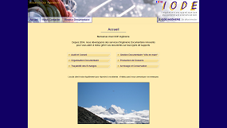
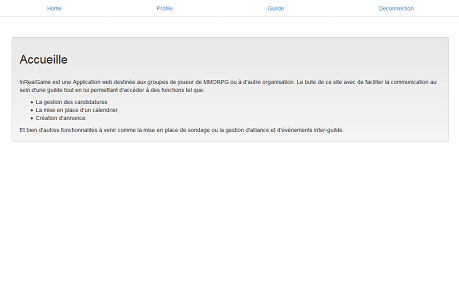
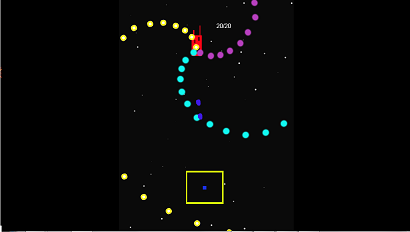
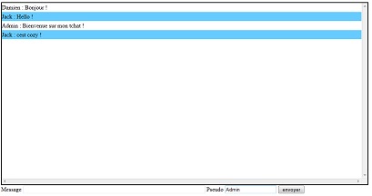
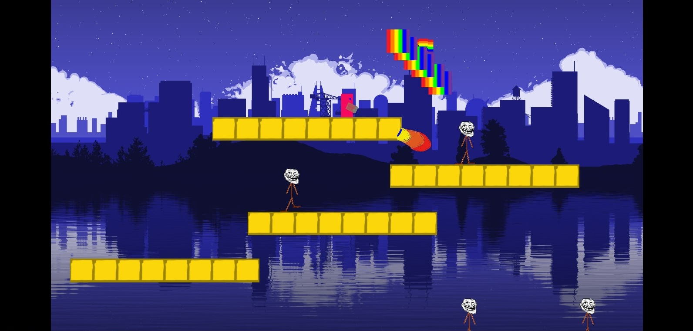
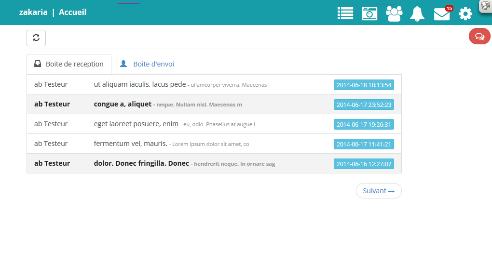

J'ai rejoint l'entreprise IODE Ingénierie lors de ma seconde année de BTS en alternance pour une période de 10 mois.
J'ai donc eu l'occasion, pendant cette période, de m'occuper du serveur documentaire mis à la disposition des clients de IODE.
Cela m'a permis d'approfondir mes connaissances en PHP orienté objet ainsi que dans les échanges FTP tout en pratiquant des technologies comme le JQuerry et le AJAX.
Essayez le ici !
> Php5, Ftp via Php, JQuerry, AJAX, CSS3, HTML5

InRealGame est une Application web destinée aux groupes de joueur de MMORPG ou à d'autre organisation. Le but de ce site avec de faciliter la communication au sein d'une guilde tout en lui permettant d'accéder à plusieurs fonctions de gestion.
Essayez le ici !
> Symfony2, Bootstrap, Mysql

Dodge To Kill est un jeu que j'ai créé entièrement seul. Il reprend l'idée générale du space shooter mais, sans laisser la possibilité au joueur de tirer à sa guise. En effet pour se défendre le joueur doit passer près des attaques ennemies pour tirer automatiquement un projectile.
Ce Projet est en cours de construction. Essayez le ici !
> Construct2

Afin d'apprendre l'Ajax, je me suis lancé dans la création d'un tchat en temps réel.
Ce Projet est en cours de construction. Essayez le ici !
> AJAX, Jquerry, JavaScript, PHP, Doctrine2
Connection Lost

Connection Lost est un projet de Jeux Vidéos débuté en juin 2014.
Pour ce projet j'ai travaillé avec l'aide d'un ami développeur. Je me suis surtout occupé de la partie intelligence artificielle des ennemis. Mon collègue, lui, c'est chargé de la physique et des animations.
> Construct 2
Reseau Social - Ma Kubosphere

J'ai travaillé sur le réseau social Ma Kubosphére de Mai 2014 à Juin 2014 lors d'un stage de 6 semaines.
C'est grâce à ce projet que j'ai pu apprendre le CakePhp.
> CakePhp, Bootstrap.


.png)